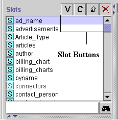

The Slot buttons, 

 , located at the top right of the
Slot pane in the Slots Tab, allow you to view and edit, create, or add, or remove a slot for the
current class.
, located at the top right of the
Slot pane in the Slots Tab, allow you to view and edit, create, or add, or remove a slot for the
current class.

The buttons have the following actions:
| |
V(iew) button: Click this button to open the Slot Form for the highlighted slot. You can also view a slot by double-clicking it in the Slot Pane. See Viewing a Slot. |
| C(reate) button: Click this button to create a new slot. See Creating a Slot. | |
| Back-references button: Click this button to view all the objects that reference the highlighted slot. See Viewing Back-References. | |
| Remove button: Click this button to delete the highlighted slot from the project. See Deleting a Slot. |
You can also view, create, and edit slots from the Template Slots pane. See the Template Slot Buttons for more information.
Next: The Slot Form